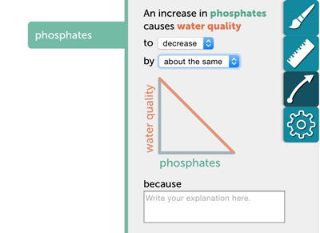
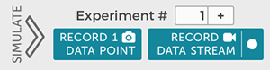

Intro rápida a SageModeler
Seguir las instrucciones de abajo o mirar un video instructivo corto para aprender cómo crear su propio modelo.

Nota: ¡Este software está en desarrollo! Por favor, si encuentran errores repórtenlos aquí. ¡Gracias!
Make a diagram
Piensen qué es lo que quieren modelizar. Tal vez estén pensando en los factores involucrados en el cambio climático o las variables que afectan la calidad de agua de un río, laguna, lago o arroyo cercano. ¿Quieren diagramar su comprensión sobre una relación predador-presa?
¿Qué imágenes querrían incluir en su modelo? (Pista: Si es algo demasiado abstracto, usen el ícono de la cajita azul.)
- Hagan clic en el ícono “Nueva imagen” en la parte superior izquierda de SageModeler o arrastren el ícono al espacio de trabajo.
- Busquen una imagen usando la caja de Búsqueda de imágenes (que busca imágenes de dominio público alojadas en openclipart.org).
- Una vez que hayan encontrado la imagen, hagan clic en click Agregar imagen para agregarla a su paleta de imágenes. Podrán reutilizar esta imagen cuantas veces quieran en su diagrama y quedará grabada en su archivo cuando lo guarden, es decir, si hoy cierran el archivo y lo abren mañana para seguir trabajando, no tendrán necesidad de buscar nuevamente la imagen ya que permanecerá ahí aunque no la hayan usado en su diagrama.
- Busquen otra imagen o cierren la ventana de “Agregar nueva imagen”.
- Ahora arrastren la imagen desde su paleta al espacio de trabajo donde construirán el diagrama.
Agregar conexiones
After you’ve added images to your canvas, connect them with links to show which variable affects the other. Select an image, click the arrow, and drag it to another image, then release.
Create relationships
You’ve added images and links – great! Now, define relationships by clicking a variable (image), then the arrow icon (relationship inspector) in the inspector palette. For instance, what do you think would happen to the Earth’s temperature if greenhouse gases increase? Or what would happen to water quality if there’s an increase in phosphates?

Simulate your model
After you’ve set all the relationships, it’s time to run your model and collect data.
Click the Simulate arrow in the upper right of the window, which will start simulation of the model and expand to display data recording options. You can now adjust model variables by changing their slider handles.
You can show mini-graphs of those changes by clicking the gear icon and turning them on in the simulation settings.
You can record one data point or record a data stream, which allows you to record all of the variables as you make changes in real time. It is recommended to increment the experiment counter each time you explore the impact of a new variable. 
Add a graph by clicking the icon in the upper left panel.
Configure the graph by dragging table headers to the graph axes or click in he graph axes to set variables.
Explore your data
Because SageModeler is embedded in CODAP, you can explore data with tables, graphs, and more. Check out the CODAP help videos.